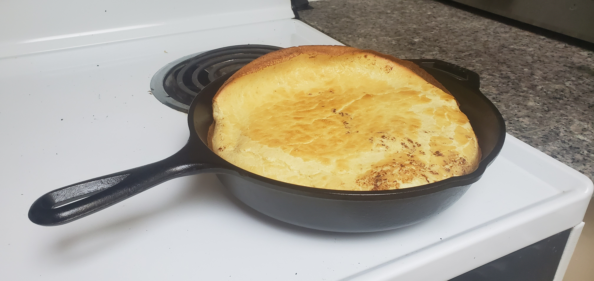

German Pancakes

*/
Ingredients
- 4 Eggs
- 1 cup Milk
- 1 cup Flour
- 1/2 tsp Salt
- 1/2 tsp Nutmeg
- 2 Tbs Butter (1/4 stick)
Preheat oven to 450 degrees. Place butter in a medium/large fry pan and place the pan in the oven to melt the butter. Blend the other ingredients then pour the resulting batter into hot fry pan. Place the frypan back in the oven and bake for 15-20 min. Remove when the top and outside edges have started to brown. the pancake will rise twice to three times its original size but will colapse back into the pan when removed from the oven. Cut the pancake into slices and serve with toppings of choice including powderded sugar and lemon juice, fruit with whipped cream, butter and maple syrup ect.